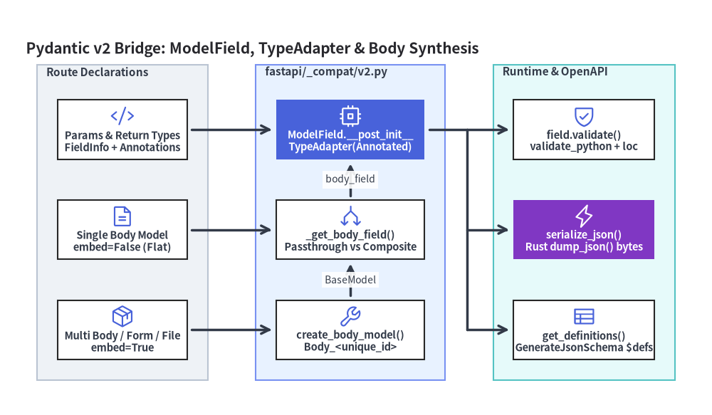
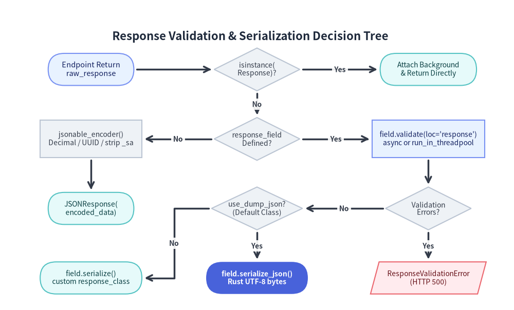

fastapi/_compat/v2.py・ModelField・ボディ分割と serialize_response()
FastAPI は、Pydantic 内部のバリデーション、JSON Schema 生成、および Rust 製シリアライザ API を専用のアダプタパッケージ fastapi/_compat/（__init__.py, shared.py, v2.py）の背後に隔離しています。FastAPI v0.162.2 では旧 pydantic.v1 サポートが廃止（PydanticV1NotSupportedError）され v2.py に一本化されていますが、クエリパラメータ・ヘッダ・リクエストボディ・レスポンスモデルのすべてを単一のインターフェースとして扱う抽象層 ModelField は引き続きルーティング・DI 解決・OpenAPI 3.1 合成の中核を担っています。

1. なぜ fastapi/_compat/ で Pydantic 内部実装を隔離するのか
Pydantic v2 では、v1 時代のフィールド単位の ModelField が廃止され、pydantic-core（Rust 実装）の CoreSchema ツリーを駆動する TypeAdapter 中心のアーキテクチャへ刷新されました。FastAPI は routing.py、dependencies/utils.py、openapi/utils.py の各所に TypeAdapter や FieldInfo 複製ロジック、あるいは pydantic._internal への呼び出しを散在させることを避け、Pydantic 連携を 2 つのモジュールに集約しています。
fastapi/_compat/shared.py: コンパイル時の引数分類で使われる純粋な型検査述語群（lenient_issubclass,field_annotation_is_scalar,field_annotation_is_sequence,field_annotation_is_scalar_sequence,is_uploadfile_or_nonable_uploadfile_annotation,is_bytes_or_nonable_bytes_annotation）を提供します。fastapi/_compat/v2.py:ModelField、カスタムGenerateJsonSchema（OpenAPI 3.1 向けにbytes_schemaを拡張しcontentMediaType: "application/octet-stream"やcontentEncoding: "base64"を出力）、get_definitions()（separate_input_output_schemas=True時に"validation"用と"serialization"用の$defsスキーマを分離生成）、evaluate_forwardref()、およびcreate_body_model()を実装します。
1.1 ModelField（v2.py）の内部構造
ModelField は field_info: FieldInfo、name: str、mode: Literal["validation", "serialization"] = "validation"、config: ConfigDict | None = None を保持する @dataclass です（スキーマ辞書のキーとして扱えるよう __hash__ は id(self) を返します）。
- 起動時の
TypeAdapter構築（__post_init__）:asdict(self.field_info)で(annotation, metadata, attributes)を抽出し、Pydantic 2.12 以降で単体Field(alias=...)利用時に発生するUnsupportedFieldAttributeWarningを抑制した上で、Annotated[annotation, *metadata, Field(**attributes)]を再構築してルート登録時に一度だけself._type_adapter = TypeAdapter(..., config=self.config)をコンパイルします。 - ロケーション接頭辞付きバリデーション（
validate）:self._type_adapter.validate_python(value, from_attributes=True)を呼び出し、ORM インスタンスからの属性読み取りも標準でサポートします。ValidationError発生時には_regenerate_error_with_loc()がエラー URL を除外（include_url=False）しつつ、("query", "limit")、("body", "item")、("response",)といった FastAPI 文脈のlocタプルを各エラーの先頭へ付与します。 - 2 系統のシリアライズメソッド（
serializeとserialize_json）:serialize()はself._type_adapter.dump_python(value, mode=mode, ...)により JSON 互換の Pythondict/listを生成するのに対し、serialize_json()はself._type_adapter.dump_json(value, ...)を呼び出して Rust 層で直接 UTF-8 の JSONbytesへ一括変換 し、中間 Python 辞書の生成とjson.dumps()のコストを完全に省きます。
2. ボディ分割・embed=True・create_body_model()
HTTP リクエストのボディストリームは 1 本しかありませんが、FastAPI ではエンドポイントや複数のサブ依存関係にまたがって複数の Body()、Form()、File() 引数を同時に宣言できます。FastAPI はコンパイル時の合成と実行時のスライス検証を組み合わせることでこれを解決しています。
| エンドポイントのボディ宣言パターン | _should_embed_body_fields() |
APIRoute.body_field（_get_body_field） |
request_body_to_args() の実行時検証 |
|---|---|---|---|
単一 BaseModel（item: Item） |
False |
body_params[0] をそのまま採用（annotation is Item） |
ルート JSON 全体を loc=("body",) として直接検証。 |
Body(embed=True) 付き単一モデル |
True |
{"item": Item} を包む Body_<unique_id> を動的合成 |
body.get("item") を取り出し loc=("body", "item") で検証。 |
複数 Body() / サブ依存ボディ併用 |
True |
全フィールドを統合した複合モデル Body_<unique_id> を合成 |
各 Dependant が自身の body_params に該当するキーのみをスライス検証。 |
スカラー Form() / File() 引数 |
True |
優先順 File > Form > Body で Body_<unique_id> を合成 |
_extract_form_body() で抽出し、_read_file_bytes() でファイル位置を巻き戻す。 |
fastapi/dependencies/utils.py には、特に重要な 2 つの設計上の不変条件があります。
APIRoute.body_fieldはメディアタイプ判定と OpenAPI 生成専用:_get_body_field()の docstring に明記されている通り、create_body_model(fields=..., model_name="Body_" + name)（内部でpydantic.create_model()を呼び出す）は、フォームデータ判定（isinstance(body_field.field_info, params.Form)）と統合 OpenAPIrequestBodyスキーマ生成のために使われます。実行時のsolve_dependencies()はBody_<unique_id>をインスタンス化 せず、各Dependantがrequest_body_to_args()で自身のbody_paramsだけを個別に検証するため、複数のサブ依存関係が同一 JSON ボディの異なるキーを安全に分担できます。- 共有
UploadFileの非破壊読み取り（_read_file_bytes）:File()引数がbytes型として宣言されている場合、_read_file_bytes()はposition = file.file.tell()を記録してawait file.read()を実行した後、finallyブロックで必ずawait file.seek(position)を呼び出し、同じアップロードファイルを参照する後続の依存関係が空データを読み取らないよう保護します。
3. レスポンス直列化パイプライン：serialize_response() と jsonable_encoder()
get_request_handler()（fastapi/routing.py）内で run_endpoint_function() が raw_response を返すと、FastAPI は戻り値の型とルート設定に応じて最速かつ安全な直列化経路を選択します。
Responseインスタンスの直接パススルー:isinstance(raw_response, Response)がTrueの場合（StreamingResponse、FileResponse、構築済みJSONResponseなどを直接返した場合）、未設定であればsolved_result.background_tasksを引き継ぐだけでserialize_response()を一切通さずそのまま返却します。- 型付き
response_fieldによる検証と直列化（field is not None）:response_model=Noneが明示されるか戻り値型がResponseサブクラスでない限り、APIRouteはroute.response_field = create_model_field(..., mode="serialization")を構築します。serialize_response()内部では次の処理が行われます。- 非同期エンドポイントではイベントループ上で
field.validate(response_content, {}, loc=("response",))を実行し、同期defエンドポイントでは CPU 負荷の高いモデル変換でループを止めないようawait run_in_threadpool(field.validate, ...)へオフロードします。 - 検証エラーが発生した場合は
ResponseValidationError（HTTP500 Internal Server Error）を送出し、未検証の内部属性が外部へ漏洩することを防ぎます。 - Rust ワンパス高速経路（
use_dump_json=True）:response_classがデフォルト（DefaultPlaceholder(JSONResponse)）のまま変更されていない場合、get_request_handler()はdump_json=Trueを指定します。serialize_response()はfield.serialize_json(...)（include,exclude,by_alias,exclude_unset,exclude_defaults,exclude_noneを適用）で得た UTF-8bytesを直接Response(content=content, media_type="application/json")に格納して返します。 - カスタム
response_class経路（use_dump_json=False）: 独自のresponse_classが指定されている場合はfield.serialize(...)（dump_python(mode="json")）で Python オブジェクトへ変換し、actual_response_class(content, **response_args)へ渡します。
- 非同期エンドポイントではイベントループ上で
- 型指定なし時のフォールバック（
fastapi/encoders.pyのjsonable_encoder）:response_field is Noneの場合、serialize_response()はjsonable_encoder(response_content)へフォールバックします。この関数はBaseModel（model_dump(mode="json")）、dataclass（dataclasses.asdict）、Enum（.value）、PurePath、dict（sqlalchemy_safe=True時に SQLAlchemy 内部状態キー_sa*を自動除外）、イテラブル・ジェネレータ、およびENCODERS_BY_TYPE（datetime/date/time$\rightarrow$isoformat()、timedelta$\rightarrow$total_seconds()、Decimal$\rightarrow$ 指数 $\ge 0$ ならintそれ以外はfloat、UUID/IPv4Address/Url$\rightarrow$str）を再帰変換し、最終的にdict(obj)とvars(obj)を試みます。

4. APIRoute.body_field 合成と serialize_response() のコード検証
以下のスニペットでは、単一モデルと複数ボディ引数における APIRoute.body_field の違い、および serialize_response(dump_json=True)（Rust による bytes 直接生成）と jsonable_encoder() フォールバックの挙動を検証します。
import asyncio
from decimal import Decimal
from typing import Annotated
from uuid import UUID
from fastapi import Body, FastAPI
from fastapi._compat import ModelField
from fastapi.encoders import jsonable_encoder
from fastapi.routing import APIRoute, serialize_response
from fastapi.utils import create_model_field
from pydantic import BaseModel, Field
class ItemCreate(BaseModel):
title: str
quantity: int = 1
class InvoiceOut(BaseModel):
invoice_id: UUID = Field(serialization_alias="id")
amount: Decimal
note: str | None = None
app = FastAPI()
@app.post("/single")
async def create_single(item: ItemCreate) -> dict[str, str]:
return {"title": item.title}
@app.post("/multi")
async def create_multi(
item: ItemCreate,
priority: Annotated[int, Body(ge=1)],
) -> dict[str, str]:
return {"title": item.title, "priority": str(priority)}
routes = {r.path: r for r in app.routes if isinstance(r, APIRoute)}
# 1. Single BaseModel stays flat; multi-body synthesizes Body_<unique_id>
assert routes["/single"]._embed_body_fields is False
assert routes["/single"].body_field.field_info.annotation is ItemCreate
assert routes["/multi"]._embed_body_fields is True
synthesized_cls = routes["/multi"].body_field.field_info.annotation
assert synthesized_cls.__name__.startswith("Body_create_multi")
assert set(synthesized_cls.model_fields.keys()) == {"item", "priority"}
# 2. Rust dump_json fast path vs jsonable_encoder() fallback
out_field: ModelField = create_model_field(
name="Response_Invoice",
type_=InvoiceOut,
mode="serialization",
)
sample_uuid = UUID("12345678-1234-5678-1234-567812345678")
raw_bytes = asyncio.run(
serialize_response(
field=out_field,
response_content={"invoice_id": str(sample_uuid), "amount": "19.95"},
by_alias=True,
exclude_none=True,
dump_json=True,
)
)
assert raw_bytes == b'{"id":"12345678-1234-5678-1234-567812345678","amount":"19.95"}'
fallback_dict = asyncio.run(
serialize_response(
field=None,
response_content={
"id": sample_uuid,
"total": Decimal("42"),
"_sa_instance_state": object(),
},
)
)
assert fallback_dict == {
"id": "12345678-1234-5678-1234-567812345678",
"total": 42,
}
assert jsonable_encoder(Decimal("42.50")) == 42.5
APIRoute が body_field と response_field をルートごとのハンドラクロージャへ組み込む仕組みについては APIRouter・APIRoute とクロージャ合成 を、get_definitions() が ModelField 群から OpenAPI 3.1 の JSON Schema を生成する処理については get_openapi()・$defs 集約・Docs UI を参照してください。